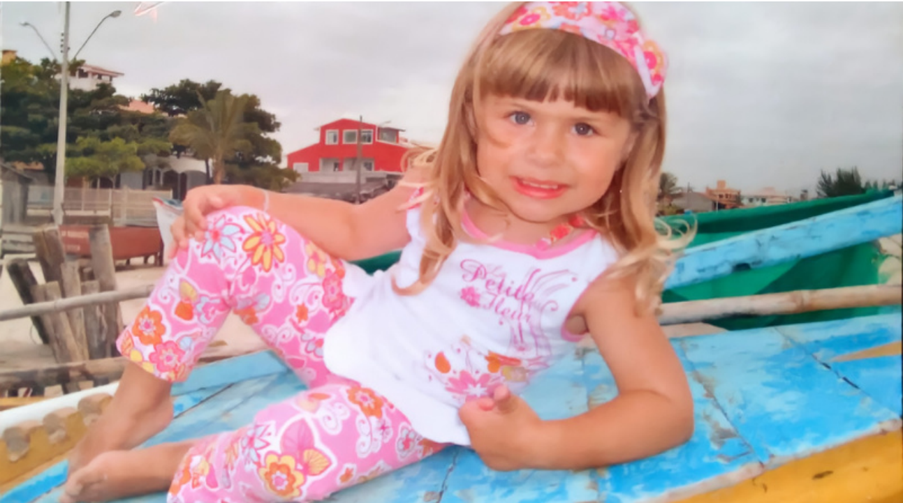

Oi, eu sou a Rafaela
Apresente-se
Olá, meu nome é Rafaela Oliveira Moyses, tenho 16 anos e faço aniversário 02/08, nasci em 2006 em Urubici e moro aqui desde sempre.Tenho 1,64 de altura, não faço acadêmica e nem pratico esportes, e minha alimentação não é das melhores. Gosto de escutar música, pintar e dormir. Tenho cabelos longos e lisos , tenho olhos verdes claros.
Cursos dos quais participei
Quando eu ainda estava no fund 1, eu fazia curso de inglês no Sesc com um prof muito querido, mas um tempo depois o curso acabou. Nessa mesma época eu também fiz ballet por um ano, a prof era a mãe de uma amiga que tinha se mudado para Urubici. Quando entrei no 6°ano, voltei a fazer curso de inglês no Sesc com a prof Sheila, no qual fiquei por 4 anos.
Projetos dos quais me orgulho
Quando criança, muitas vezes separei Sacolas com brinquedos e CDs que eu não usava mais para doar à creche que ficava atrás da minha casa.
Objetivos para o futuro
Penso em fazer administração e conseguir um bom emprego, o suficiente para ter uma vida estável e agradável, podendo viajar umas vezes ao ano.